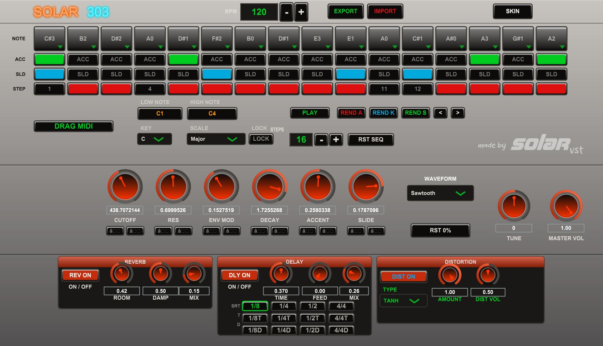
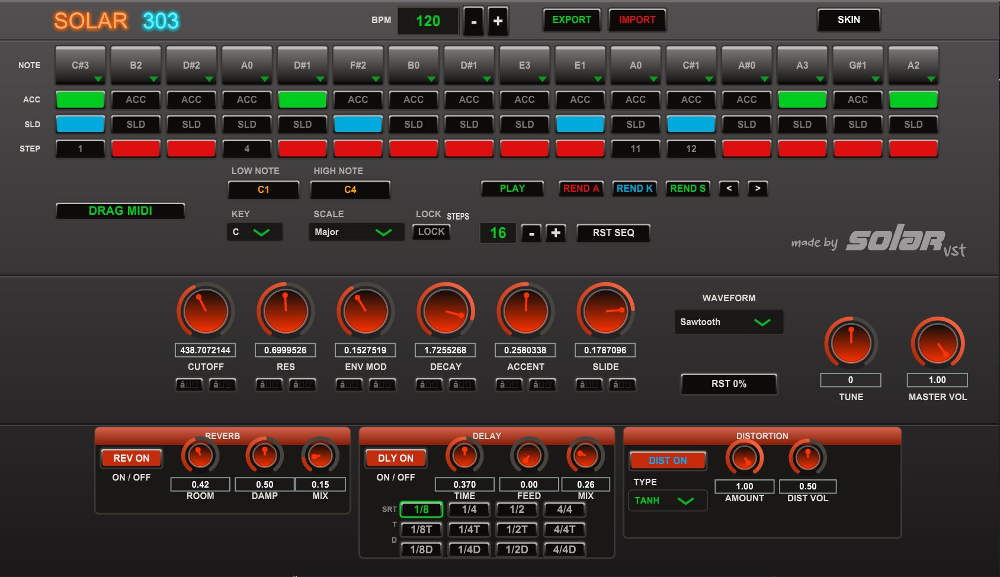
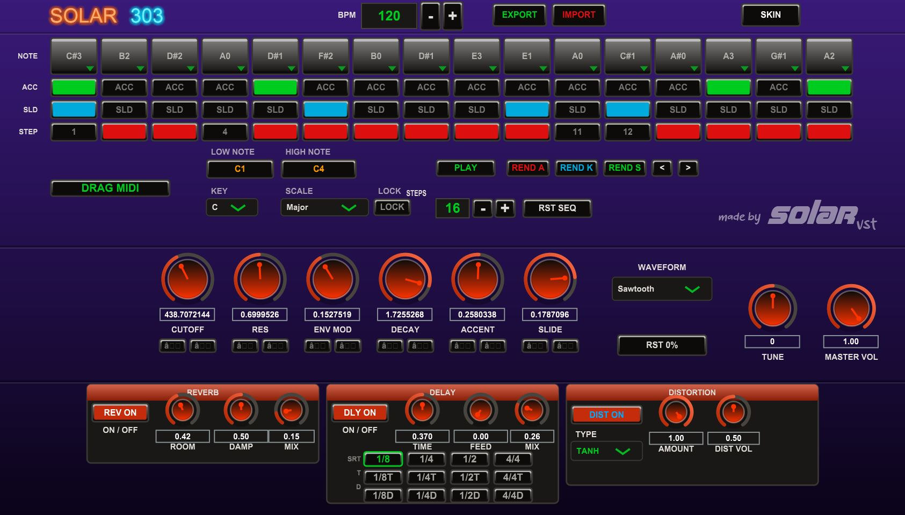
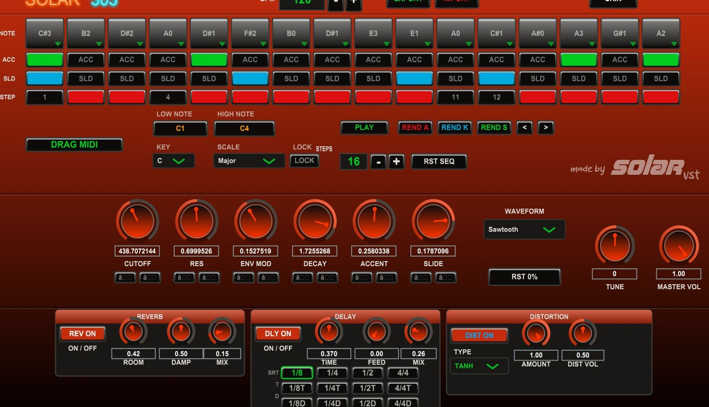
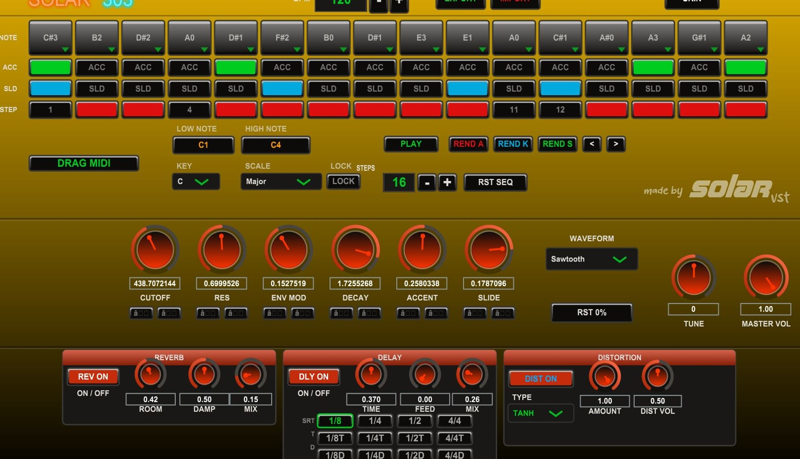

THE ACID MACHINE
Born from the legendary Roland TB-303 — every squelch faithfully recreated





Built from the ground up — a professional Acid Bass Synthesizer inspired by the legendary TB-303 sound, packed with features that go far beyond the original.
Fat, meaty, and dripping with character. Every note hits with weight and warmth — from deep rolling bass lines to screaming acid squelches that cut through any mix.
A resonant Diode Ladder Filter delivering thick, organic acid tones with full control over Cutoff, Resonance, Envelope Mod, Decay, and Accent.
Windows 10+ · VST3
Works with Ableton Live, FL Studio, Cubase, Reaper, Studio One, and any VST3-compatible DAW.
Everything that makes the acid flow
A fully loaded step sequencer with variable length, musical scale lock, note range control, pattern randomizer, and drag-to-DAW MIDI export.
Screaming resonant low-pass filter. Cutoff, resonance, envelope mod — the unmistakable 303 character.
Per-step portamento glide and accent boost that define the iconic acid sound.
From warm saturation to aggressive clipping. Push the signal until it screams.
Rhythmic stereo echoes locked to your DAW's tempo with adjustable feedback.
Lock-free MIDI CC mapping. Assign any hardware knob to any parameter instantly.
Intelligent one-click pattern generation. Discover unexpected acid sequences instantly.
Lush stereo reverb from tight rooms to infinite ambient washes — place your bass in space.
Multiple visual themes. Switch between looks to match your studio aesthetic.
We built the sequencer that didn't exist yet — the most complete, most musical, and most powerful acid sequencer in the world.
The most advanced acid sequencer ever built. Period.
Choose your root key and scale — Major, Minor, Pentatonic, and more. Every randomized note lands perfectly in key. No wrong notes, ever.
Set the low and high note boundary for randomization. Keep the pattern tight in one octave or spread it across the full range — your call.
One click randomizes the entire pattern — notes, accents, slides and step length — all constrained to your chosen scale and range.
REND K randomizes only the knob values. REND S randomizes only the step pattern. Dial in the sound first, then explore the groove — or vice versa.
Set any pattern length from 1 to 16 steps with the + / − buttons. Hit LOCK to freeze the current pattern and protect it from accidental randomization.
Navigate forward and backward through your randomization history. Found something great? Step back to it instantly — nothing is ever lost.
The audio path from sequencer to output
System requirements and technical details
Unleash the acid. The authentic TB-303 experience for your productions.